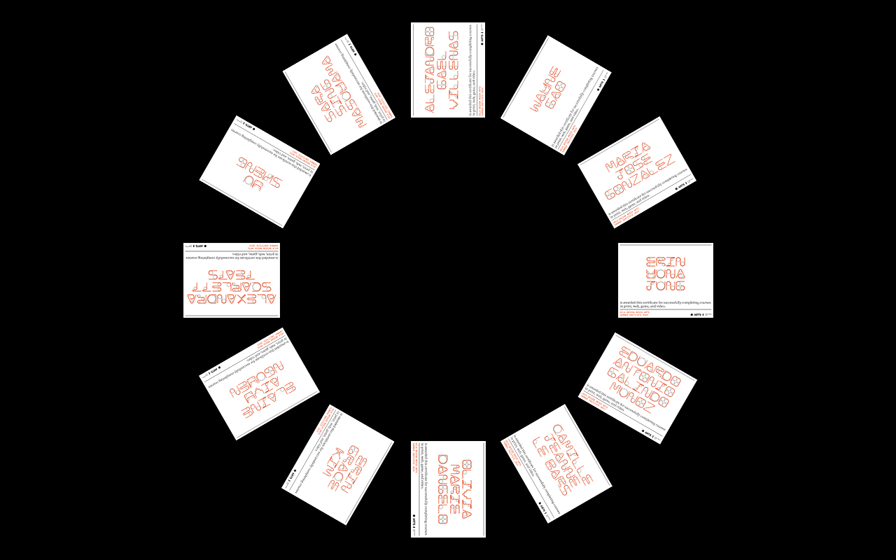
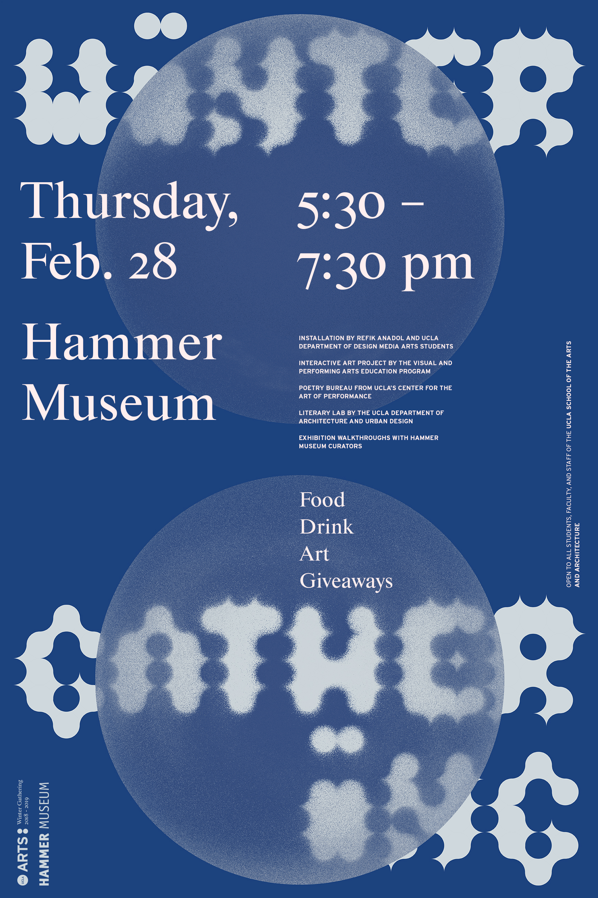
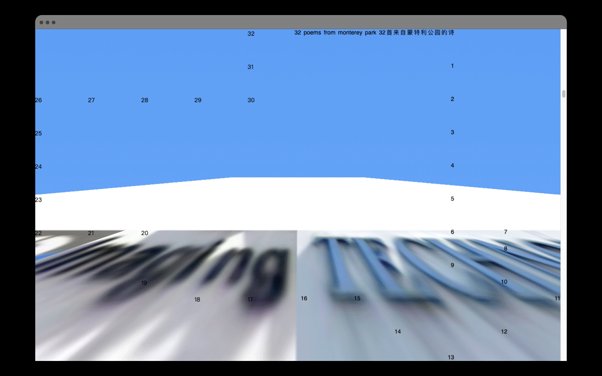
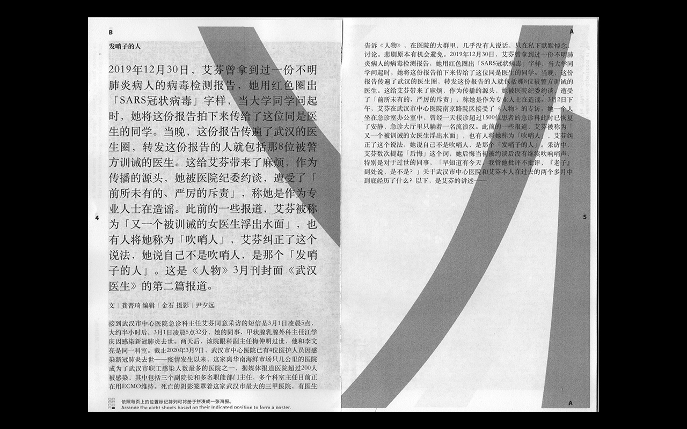

2021I was twenty-two andA print and web publication that explores queer identity and memory through images of queer spaces in New York City and the memories held within themI was twenty-two and explores queer identity and memory through images of queer spaces
in New
York City and the memories held within them. Using an iPhone camera app’s panorama feature, all
images were taken between September and October 2019 throughout New York City, with their respective
locations found through Queering the Map’s archive.
Consisting of 244 pages, the 5.25 in by 4 in. book is designed without page numbers or a traditional
cover. Like the way one explores a city, this creates a sense of immersion and immediacy while
activating a mode of reading that is non-linear and explorative. A complementary website encourages
a similar experience, while allowing interactivity through the highlighting of text within any piece
of memory in order to generate new narratives.
Both forms of publications display their content in a continuous manner, echoing the form of the
panoramic images seen throughout the publications. A panoramic image can capture more than what the
eyes can see, and therefore expands the definition of what queer spaces can be.
Website
2021NEW HOMEA print and web publication that explores memories of home through rorschach-esque abstractions of
stock photos
NEW HOME explores memories of home. NEW HOME is the english translation of a town’s name in the
southeastern region of China — 新 (New) 厝 (Home) 镇(Town) — the town where my family immigrated from.
NEW HOME is at the same time, my new home in the U.S. as an immigrant, in its literal meaning. In
this project, I appropriated stock photos reminiscent of my hometown into rorschach-esque inkblots.
These images, along with their default, generic, and open-ended captions, exist to evoke free
associations of home, regardless of where one’s home is. The contents took forms as a 52-page
printed booklet hand-bound using the slot-and-tab technique and a complementary website that gets
dimmer by the hour. Throughout the day, the website increasingly becomes overtaken by cockroaches —
an insect that has made up chunks of my memories in both my old and new homes.
Website
202032 Poems from Monterey ParkA tribute to the city of Monterey Park in the forms of a print and web publication containing poems collaged from screenshots of the city found on Google Maps

32 poems (16 in English, 16 in Chinese) collaged from screenshots of found text scraped off of buildings, signages, and other city constructions. All screenshots were taken from the Google street view of Monterey Park, a neighborhood in the San Gabriel Valley region of Los Angeles with a dense Chinese-American population. These poems were self-published both through print and web. A total of 8 publications were printed at home, hand-bound using the slot-and-tab technique, then anonymously distributed at various locations throughout the city. Together with the website, the resulting collages function as maps for poetically navigating the neighborhood.
Website
2020Still Going StrongA series of satirical posters about the state of and the public response to COVID-19
A series of satirical posters commenting on the state of COVID-19 while mocking the western sense of invincibility and ignorance in reaction to a global pandemic.
2020REN—REN—REN / 人—人—人A series of contributions to a Chinese internet movement against censorship at the start of COVID-19

A series of contributions to a Chinese internet movement in response to the censorship of an
interview
with a nurse who worked at a hospital at the start of COVID-19. The four-part contribution
includes 1) a series of appropriated images recreated with the strokes of Chinese characters, 2) a
32-page booklet containing these images along with the full interview; which viewers can download,
print, assemble and preserve at home, 3) an instruction manual on how to assemble the printed
booklet,
and 4) a website with detailed information about the project and links for downloads.
Website
2020GRAPHITE 11A print publication for a Los Angeles-based student arts organization dedicated to producing critical and creative projects in an integrated physical and digital space
Publication design for the 11th issue of Graphite Interdisciplinary Journal of the Arts, a Los Angeles-based student arts organization housed within the Hammer Museum. With the theme Fruit, each artist’s work is presented as a piece of fruit with its own flesh and skin.
2020Q is for earth(Quake)A letter ‘Q’ inspired by the city of Los Angeles and its susceptibility to earthquakes
An earth(Quake)-inspired ‘Q’ created as part of an alphabetical postcard set for UCLA DMA. The original deck of 26 postcards were meant to be sold at the LA Art Book, which was unfortunately cancelled due to COVID-19...
2020a lot _________A photo book exploring the social and public potentials of parking lots
A photo book exploring the social and public potentials of parking lots – a common but often
underutilized
feature of our modern landscape. All photographs were taken on a parking lot that used to
be a
popular drive-in theater, now repurposed as a weekly flea market. The resulting photographs and the
publication investigate the physicality of this space and documents the human as well as material
culture within a lively microcosm.
2020PHOENIXIdentity and collaterals for a dance performance exploring the myth of the phoenix
An identity for a work-in-progress performance by Selcouth Movement, a dance company founded by
dancer
and choreographer Marianna Varviani. The performance explores the myth of the phoenix and its
journey
through the stages of birth, flow, struggle, destruction, and rebirth.
2019Stefanie Nelson Dancegroup / Dance ItaliaCollaterals and website for a contemporary performance ensemble and a dance workshop
Collaterals and front-end website development for Dance Italia, an Italy-based dance workshop, and
its
parent company Stefanie Nelson Dancegroup, a New York City-based performance ensemble. All materials
were designed around a library of dynamic and graphic shapes inspired by the geometric language of
the
dancers’ physical forms.
2019NeurotrackAnimations for a biotech company working to help people with dementia
Logo and pattern animation for Neurotrack, a Bay Area-based biotech company developing digital
cognitive
health solutions to help people combat Alzheimer’s and other dementias.
2019UCLA SOAA New Student T-shirtA T-shirt for new students admitted to UCLA Arts
A t-shirt for newly-admitted students to UCLA's School of the Arts and Architecture. The shirt
combines four graphic patterns, each representing one of the four departments within the school.
2019Rebecca Allen is RetiringAn announcement and invitation to a retirement gathering
An animated announcement and invitation to the retirement gathering of Rebecca Allen, Professor in the Department of Design Media Arts at UCLA. The animated email header features a snippet of an early work produced by Rebecca Allen for the electronic music band Kraftwerk.
2019UCLA DMA Career Development Workshop SeriesIdentity and collaterals for a series of career development workshops at UCLA DMA
An identity for a series of career development workshops at UCLA DMA. All promotional materials were
designed around a dynamic line, which grounds each composition while suggesting notions of movement
and mobility.
2019It's Mine!A reflection and rant on the human desire for domination
A reflection and rant on the human desire for domination.
The contents took form as newsprints with ad inserts about land leasing on Mars.
2019UCLA DMA Summer InstituteIdentity, website, and collaterals for a two-week summer program at UCLA DMA
An identity for UCLA DMA’s 2019 Summer Institute. With the theme Next Nature, the identity explores the semiotics of the cogwheel as it relates to technology and the future. Cogwheels can allude to notions of both automation and liberation, as well as both utopianism and dystopianism. A set of animated alphabet was designed around cogwheels and used for headers and larger titles on the website, as well as all print and digital collaterals.
Website
2019TypevoiceA typeface drawn from randomly-positioned, voice-activated lines
A typeface drawn from randomly-positioned, voice-activated lines.
2019UCLA SOAA Winter GatheringCollaterals for a quarterly celebration at UCLA Arts
Collaterals for the Winter Gathering at UCLA Arts in 2019, extending the event identity that was
designed in Fall 2018. An animation was created and projected at the Hammer Museum on the day of the
gathering, announcing the event’s program.
2019UCLA SOAA Winter Holiday E-cardAn animated holiday card greeting members of the UCLA Arts community
A holiday e-card to the faculty, students, and staff of UCLA Arts in Winter 2019. The card
highlights a message by David Gere, founding director of the UCLA Art & Global Health Center and
Professor in the
Department of World Arts and Cultures/Dance.
2018UCLA SOAA Fall OpeningIdentity and collaterals for a series of celebratory events at UCLA Arts
An identity for a series of quarterly celebrations at UCLA Arts. Based on the circles in the
existing
UCLA Arts’ logo, a set of letterforms, numbers, and punctuations were designed around a circular
grid
that became the basis for the identity. Collaterals included an interactive image filter where
visitors
can have their pictures taken by a photographer and then processed through a filter for
a
circular pixelation effect.
2018GenesisAn typography-centered immersive experience that explores genesis as a metaphor for motherhood
An immersive projection mapping experience that narrates a quote from the 1994 book Children, Take
Your
Time, by Essayist Long Ying-tai. The quote reads: “My child has taken me back to the origin of human
existence. Within this vastness between Heaven and Earth, I am engaging in the earth-shattering,
heaven-battering act of Genesis.” The author compared motherhood to genesis, and I attempted to
narrate
this profound sentiment with type in motion.
2018Portrait GeneratorA generative portrait-drawing tool
A custom portrait-drawing software that illustrates face-like images through lines generated by hovering.
2017Are You Sure You Want To Permanently Throw Away Your Device?A lenticular card that questions the throw-away culture
A lenticular card that questions the throw-away culture. The pop-up notification on the card asks “Are You Sure You Want To Permanently Throw Away Your Device?”, and flashes when viewed from different angles, demanding your attention.
2017DetourA poster that explores the meaning of "Detour" in relation to the design process
A poster made in response to an open call by the Weltformat Graphic Design Festival, themed “Detours”. The poster illustrates the design process: a non-linear experience filled with obstacles and challenges.
2017IlliteraA poster that features a quote and a typeface designed by a member of the illiterate community
A poster designed in invitation by Nicolas Bernklau and Tobias Müller, who held a type design
workshop for the illiterate people in their local community. The poster showcases a quote by one of
the
workshop's participants, set in the typeface they had designed.
2017Blank PosterA series of posters that explore the relationship between language, form, and meaning
A series of posters that explore the relationship between language, form, and meaning. Contributed to
and published by Blank Poster.
2017Chelsea Hotel No.2A lyrical poster for Leonard Cohen’s Chelsea Hotel No.2, a song about a romantic encounter
A lyrical poster for Leonard Cohen's Chelsea Hotel No.2. Released in 1974 as part of the album New
Skin for the Old Ceremony, the song is about Cohen's romantic encounter with Janis Joplin at the
Chelsea Hotel in New York City. The poster attempts to depict the romance as well as the site of the counter through
its colors and the extruded, architectural type.